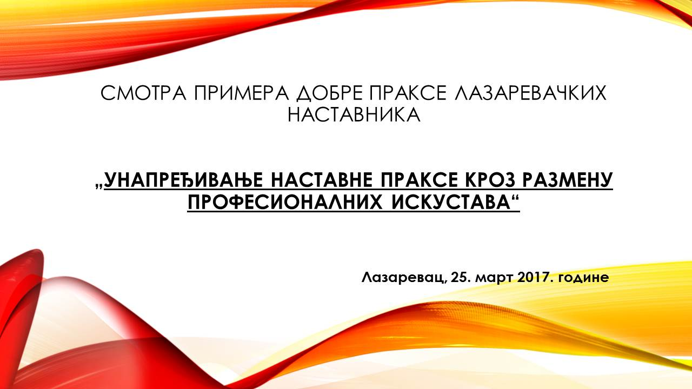

Посета наших најбољих осмака Старом двору
Најбољи уценици београдских основних школа, ђаци генерације, присуствали су пријему у Старом двору 30.јуна. Међу њима је био и наш Богдан Бајевић, ученик VIII2 одељења. Овим поводом приређен је културно-уметнички програм, а присутне ђаке, професоре и њихове ридитеље поздравили су Министар просвете и градоначелник. Уценици су добили комплете књига Иве Андрицћа и Збирке кованица знаменитих Срба.
Погледајте слике са пријема...
Јавна набавка добара - електрична енергија
Обавештење о закљученом уговору
Осмаци - на крају школске 2016/2017. године
Осми разред је похађало 95 ученика. Сви су успешно завршили школску годину, као и Завршни испит. Наставничко веће наше школе доделило је 7 Вукових диплома за изузетан успех и примерно владање током осмогодишњег школовања.
Носиоци Вукових диплома су:
Матурско вече за ученике 8. разреда организовано је 8. јуна 2017.године у ресторану „Том и Џери“. Окупљање ученика почело је од 18 часова испред ресторана. Након фотографисања ученика са разредним старешинама, организован је свечани дефиле ученика црвеним тепихом до ресторана. Вечера је почела око 17: 30. Ученике је поздравио директор школе, Зоран Протић. Затим су се представници одељења обратили својим наставницима и учитељима износећи своје утиске након осмогодишњег школовања. Такође, пристнима су се обратиле и одељењске старешине 8. разреда: Александар Богетић, Зорана Вуковић, Соња Марјановић и Драгана Јеремић.
Ученици су уживали у вечери уз звуке добро одабране музике. Водитељ програма био је наш глумац, Дарко Бјековић. Током вечери организована је лутрија и ученицима је подељено 16 награда, веома лепих и вредних. Једна од награда била је торта коју нам је поклонио ресторан. Као круна ове, дивно осмишљене и организоване, матурске вечери био је ватромет и 4 светлеће кугле које су лагано одлетеле у небо са жељом да се сви снови наших 95 ђака остваре.
 |
 |
| VIII-1 |
VIII-2 |
 |
 |
| VIII-3 |
VIII-4 |
Јавна набавка добара - електрична енергија
Одлука о додели уговора
Екскурзија седмог разреда
Дана 2.6.2017. и 3.6.2017.године изведена је дводневна екскурзија за ученике VII разреда на релацији Лазаревац – Суботица – Палић – Нови Сад - Сремски Карловци - Лазаревац, у организацији Туристичке агенције „Балканик“ из Ваљева.
На екскурзију је кренуло 79 ученика са одељењским старешинама ( Ћирић Татјана –VII1, Миловановић Милена – VII2, Радосављевић Биљана - VII3 и Безаревић Ирена – VII4) , замеником директора, Новаковић Мајом, туристичим водичем из агенције и лекаром.
Првог дана смо посетили Дворац Дунђерски где смо чули занимљиву причу о животу Богдана Дунђерског, који је изградио дворац и био близак пријатељ са Урошем Предићем и Лазом Костићем.
Затим смо кренули у Суботицу где смо посетили Градску кућу и упознали се са њеним стилом градње и начинима украшавања радовима чувених занатлија и сликара.
Након Суботице упутили смо се на Палић у посету Зоолошком врту Палић. У дивном амбијенту врта пуном различитих врста дрвећа и биљака деца су уживала разгледајући животиње из свих крајева света. Онда је уследио одмор поред Палићког језера, које је наше највеће језеро настало природним путем.
У вечерњим сатима стигли смо у Нови Сад и сместили се у хотел „Нови Сад“. Након вечере у хотелу деца су уживала у дружењу уз музику у хотелској дискотеци.
Следећег дана, након доручка, кренули смо у Сремске Карловце. Ту смо посетили Патријаршијски двор и у њему Ризницу–музеј Српске православне цркве у којој су смештене вредне иконе, различити предмети примењене уметности, ретки и вредни рукописи и старе штампане књиге, портрети епископа и митрополита. Обишли смо и Саборну цркву Светог Николе у којој се поред импресивног иконостаса и фресака налазе и слике нашег чувеног сликара Паје Јовановића.
По повратку у Нови Сад обилазимо Петроварадинску тврђаву. На тврђави смо посетили Музеј града Новог Сада и у њему видели предмете из различитих периода историје, између осталих оне који сведоче о присуству палеолитског човека и првим неолитским заједницама на том подручју. Ту смо посетили и Велики ратни бунар који је грађен у XVIII веку и могао је, у случају опсаде, дуго времена да снабдева војску водом. Имали смо прилику и да погледамо изложбу Царски дарови која представља избор од 55 експоната изузетне уметничке и историјске вредности, које је Јосип Броз Тито добио приликом сусрета са члановима владарских породица из 18 земаља Европе, Азије и Африке.
Потом се враћамо на ручак у хотел, а онда су деца добила слободно време за обилазак града.
Препуни утисака крећемо у манастир Крушедол. Ту сазнајемо да је по историјско-културној улози, по богатству ризнице манастира, чувеном иконостасу и другим реликвијама, манастир Крушедол један од најзначајнијих фрушкогорских манастира. У њему су сахрањена два патријарха Српске православне цркве и краљ Милан Обреновић.
У Лазаревац смо стигли око 20:30.
Програм екскурзије је у потпуности реализован по предвиђеном редоследу и динамици. Водич и лекар су стручно и одговорно обављали свој посао. Током целе екскурзије, ученици су се понашали одговорно и савесно. Општи утисак свих наставника и ђака је да ја агенција добро организовала целокупно путовање.
Погледајте слике...
Вокини информатичари на ГЕМ телевизији
Ученици V разреда са својим одељенским старешинама извели су у уторак, 30. маја 2017. екскурзију на релацији: Лазаревац - Ваљево - Бранковина - манастир Троноша - Тршић - Бања Ковиљача - Лазаревац
У Бранковини су посетили место где је сахрањена наша велика песникиња Десанка Максимовић као и њен спомен - музеј, цркву чувене српске породице Ненадовић са школом, где су ученици могли да се увере како је некада текло школовање њихових вршњака пре више векова.
У манастиру Троноша, кога је подигао српски краљ Стефан Драгутин у XIII веку, ученици су посетили и музеј Вука Стефановића Караџића, јер се он као мали школовао у манастиру као једином извору образовања тога краја крајем XVIII и почетком XIX века.
Након тога, пут нас је довео у Вуково родно место у близини, Тршић, где смо обишли Вукову родну кућу - музеј као и остале зграде из тог времена које сада имају галеријску намену у контексту одржавања фестивала посвећених Вуковој задужбини.
Слике говоре више од речи!
Погледајте слике...
Јавна набавка добара - електрична енергија
Kонкурсна документација
Позив за подношење понуда
Финале Кенгур такмичења
На финалном такмичењу Међународног такмичења "КЕНГУР БЕЗ ГРАНИЦА" које је одржано у недељу, 28. маја 2017. са почетком у 12 часова у ITHS - Information Technology High School (Comtrade) у Београду, ученик IV-3 разреда наше школе
МИХАИЛО РАДОВАНОВИЋ освојио је ПРВУ награду
са освојених максималних 120 бодова!

Све честитке Михаилу и пуно успеха у будућности!
Велики успех на Информатичкој олимпијади основаца

На Републичком нивоу такмичења ИНФОС - Информатичка олимпијада основаца постигнут је велики успех:
| Живковић Сара |
VII - 4 |
је освојила I награду |
| Топаловић Јован |
VIII - 3 |
је освојио II награду |
Више информација и слике са овог догађаја погледајте на блогу њихове наставнице информатике Слађане Маченовски... Вока информатика

Републичко такмичење из географије
У недељу, 7. маја 2017. године одржано је Републичко такмичење из географије у ОШ “Вук Караџић” у Шапцу. Нашу школу је представљао Урош Ђурђевић, ученик седмог разреда. Међу 178 ученика из целе Србије, Урош се пласирао на 17. место и добио похвалницу. Урошу желимо да настави да развија љубав према географији. Такође му желимо велики успех на такмичењу у осмом разреду за које је већ исказао интересовање.
М3 -мај, месец математике
У петак, 19. маја 2017. године, 17 најбољих математичара V, VI и VII разреда наше школе, учествовали су са својим наставницима математике по пети пут на манифестацији М3 - мај, месец математике у Београду у организацији Центра за промоцију науке. Ученици су посетили радионицу Центра у улици Краља Петра 46 где су у времену од 10 - 12 часова учествовали у изради Платонових тела од сламчица, јединих пет правилних полиедара који постоје у природи.
После тога, посетили су дигиталну изложбу Марије Вујиновић " Универзални објекти" у галерији науке и технике САНУ, а затим шетњом по центру града стигли у улицу Мајке Јевросиме 13 где су посетили Музеј Поште. Уз велико залагање кустоса, ученици су се упознали са историјатом поштанских услуга код нас и свим експонатима изложеним у Музеју.
На крају, ученици су ручали, одморили се и забавили у McDonald's - овом ресторану на Видиковцу и све то забележили камером, уз закључак да је програм испуњен и више него што се очекивало!
Погледајте слике...
Републичко такмичење - Књижевна олимпијада
Републичко такмичење из књижевности "Књижевна олимпијада" одржано је у суботу, 13.маја у Сремским Карловцима. Овогодишњим такмичењем, које се одржава по пети пут, обележен је јубилеј Иве Андрића. Нашу школу представљала ја Бојана Зарић, уценица 8-2, са својом наставницом Зораном Вуковић. На такмичењу је учествовало 384 ученика из целе Србије. У тој јакој конкуренцији Бојана се пласирала на 5.место. Било је пријатно наћи се у овом елитном друштву у центру српске духовности и културе.
Атмосферу из чувених Карловаца погледајте на фотографијама...
Финале Програмер Јуниора 2017

Ученице VII-2 одељења наше школе: Сандра Којадиновић и Татјана Мартиновић су у финалу такмичења Програмер Јуниор 2017, освојиле високо ТРЕЋЕ МЕСТО
Више информација и слике са овог догађаја погледајте на блогу њихове наставнице информатике Слађане Маченовски... Вока информатика
Екскурзија осмог разреда
Ученици 8. разреда су у периоду од 25. до 27. априла били на тродневној екскурзији. Прочитајте више о овом догађају и погледајте слике...
Један занимљив час ликовне културе
Ученици 3-2 одељења наше школе имали су један више него занимљив и забаван час ликовне културе . Погледајте слике...
Градско такмичење из биологије
На Градском такмичењу из биологије Костадиновић Ђорђе 83 је освојио 2.место.
Браво Ђорђе!
Резултати окружног нивоа ИНФОС такмичења
На окружном нивоу такмичења ИНФОС - Информатичка олимпијада основаца остварени су следећи резултати:
| Топаловић Јован |
VIII - 3 |
II награда (80 поена) |
| Живковић Сара |
VII - 4 |
II награда (80 поена) |
Оба ученика су изборила пласман на Републичко такмичење.
Више о овом догађају прочитајте овде...

У сусрет Васкрсу
У среду, 12. 4. 2017. године ми, учитељи првог разреда: Марина Сика I-1, Љиљана Михаиловић I-2 и Светлана Павловић I-3, у сарадњи са вероучитељем Николом Урошевић ђаконом, смо спровели у дело ТЕМАТСКИ ДАН. Тема овог наставног дана је била - У СУСРЕТ ВАСКРСУ.
Било је важно повезати што више предмета у оквиру часа НАРОДНЕ ТРАДИЦИЈЕ (интегративна настава – усвајање наставних садржаја из народне традиције, верске наставе, српског језика, света око нас, математике, као и из музичке и ликовне културе, кроз интеграцију из различитих наставних предмета где се свим предметима посвећује иста пажња). Ово није први пут у нашој школи да се изводи овај облик интегративне наставе, па је зато био и већи изазов за све нас. По осмесима деце и приустних у томе смо и успели.
Присуствовали су и директор школе Зоран Протић, педагог школе Бојана Ристић, колегиница из боравка 2. разреда Јасмина Јовановић, библиотекар школе Јасна Глишић, која је уједно начинила део фотографија, професор музичке културе Ненад Мрковић.
У припремању хола за приказивање презентације и присуство 90 ученика помогли су ученици старијих разреда, проф. српског језика Мирослав Рабреновић и наше помоћно особље, нарочито Иванка Ћургуз и Александар Саша Борић. Хвала им на томе!
Погледајте слике и видео записе са овог догађаја...
Резултати Кенгур такмичења
Финално такмичење "Кенгур без граница" биће одржано 27. маја 2017. у седишту COMTRADE - а у Београду, а на њега су се пласирали:
| Михаило Радовановић |
IV-3 |
I награда |
| Михаило Ђурђевић |
IV-1 |
III награда |
Осим њих, похвале на међународном такмичењу "Кенгур без граница" које је одржано још 16. марта 2017. освојили су:
| Вања Зарић |
II-2 |
| Јелисавета Стајчић |
IV-3 |
| Огњен Дробњак |
IV-1 |
| Дуња Дубока |
IV-2 |
| Борис Марјановић |
IV-3 |
| Мина Томовић |
V-1 |
Све честитке награђенима и пуно успеха финалистима на предстојећем такмичењу!
Дружење са песником Ранком Стевановићем
У Градској библиотеци у понедељак, 10. априла, био је сусрет песника Бранка Стевановића и ученика 3/2 и 3/3 одељења. Погледајте слике...
HIPPO такмичење
Међународно такмичење из енглеског језика HIPPO одржано је 04.03.2017. године. Учествовали сви ученици четвртих разреда и постигли одличне резултате
У категорији Hippo1, у други круг такмичења (полуфинале), који је оджан 01.04. 2017.године у Београду, пласирали се Михаило Ђурђевић, ученик разреда 4-1 и Ирина Ћуковић ученица 5-1 разреда.
Резултати градског такмичења из српског језика и језичке културе
Градско такмичење из српског језика и језичке културе одржано је 9.4.2017.године у ОШ „Милан Ђ.Милићевић“ у Београду. Две ученице петог разреда наше школе учествовале су на овом такмичењу и постигле следеће резултате:
| Ирина Ћуковић |
V - 1 |
наставник: Мирослав Рабреновић |
Ранг: I |
| Дуња Рожа |
V - 1 |
наставник: Мирослав Рабреновић |
Ранг: II |
Честитамо нашим младим такмичаркама!
Програмер Јуниор 2017
Ученице VII-2 одељења наше школе:
Сандра Којадиновић и Татјана Мартиновић
избориле су пласман на финално такмичења Програмер Јуниор 2017, које организују Друштво математичара Србије и Рачунарска гимназија у Београду.
Више о овом догађају прочитајте овде...
 |
|
Успех нашег "француза"
У оквиру пројекта које организује Француски институт и удружење професора француског језика за основне школе поводом Дана франкофоније, Вељко Јанковић ученик 6-1 освојио је друго место у категорији за пети и шести разред.
Честитамо Вељку!
|
Oкружно такмичење из математика
На Окружном такмичењу из математике које је одржано 25. марта 2017. у ОШ " 20. октобар" на Новом Београду, учествовало је 11 ученика наше школе од 25 из целе општине. Ево најбољих резултата наших ученика:
| Дуња Дубока |
IV-3 |
I награда |
| Огњен Дробњак |
IV-1 |
I награда |
| Мина Томовић |
V-1 |
похвала |
| Барбара Марковић |
VIII-3 |
похвала |
Све честитке нашим ученицима и пуно успеха у даљем раду!
Oкружно такмичење - Књижевна олимпијада
Окружно/градско такмичење Књижевна олимпијада одржано је у суботу, 1.априла 2017.године у ОШ „Исидора Секулић” у Београду. Из наше школе учествовало је 6 ученицa: Нађа Бајић и Смиљана Рајшић из седмог разреда, Емилија Станишић, Бојана Зарић, Слађана Остојић, Тара Спасојевић и Теодора Мирић из осмог разреда. Најбоље резултате постигле су:
| Нађа Бајић |
VII-4 |
16 бодова |
III место |
Биљана Радосављевић |
| Бојана Зарић |
VIII-2 |
19 бодова |
I место |
Зорана Вуковић |
Бојана Зарић остварила је пласман на републичко такмичење.
Честитамо обема, а Бојани желимо много успеха на републичком такмичењу!
Рекреативна настава трећег разреда

Изведена је још једна рекреативна настава за ову школску годину. Ученици са својим учитељицама били су у ,,Сунчаном брегу" на Златибору. Погледајте слике...
Обележен Светски дан воде

Ученици 7. и 8.разреда обележили су Светски дан вода 22.марта 2017.године припремом презентације и предавања за своје млађе другаре, ученике 3. и 4. разреда. Заједно смо се подсетили значаја очувања овог најважнијег животног ресурса и његовог недостатка у многим деловима наше планете. Погледајте слике...
Дани франкофоније
У школи су обележени Дани франкофоније.
Бојана Зарић ученица 8-2 освојила је 2. место на Градском такмичењу из француског језика и пласирала се на Републичко такмичење.
Честитамо Бојани!
Резултати окружног такмичења из географије
У недељу, 26. марта 2017. године шест ученика наше школе су у пратњи њихових наставница Милене Миловановић и Јелене Томић учествовали на Градском такмичењу из географије у ОШ “Бора Станковић”на Бањици.
Остварени су следећи резултати:
| Седми разред |
|
Осми разред |
|
| Урош Ђурђевић |
I место |
Богдан Бајевић |
II место |
| Смиљана Рајшић |
II место |
Ана Кртинић |
III место |
| Иван Милојевић |
III место |
|
|
| Страхиња Радичевић |
III место |
|
|
| Браво Географи! |
 |
На Републичко такмичење у Шапцу, 7. маја 2017. пласирао се Урош Ђурђевић, наставник-метор Милена Миловановић! Надамо се лепим вестима из Шапца!
Градско такмичење из математике
У суботу, 25. марта 2017. год., 11 ученика наше школе, заједно са још 13 ученика из осталих школе општине Лазаревац, учествовали су на Окружном такмичењу из математике, које је одржано на Новом Београду, у ОШ " 20.октобар".
После такмичења, ученици су у најбољој атмосфери, са својим наставницима, приуштили себи заслужен ручак и забаву у Mc Donald's - овом ресторану на Видиковцу.
Резултати општинског такмичења из српског језика и језичке културе
Општинско такмичењ из српског језика и језичке културе одржано је 18. марта у ОШ Дуле Караклајић. На окружно (градско) такмичење пласирале су се:
| Дуња Рожа |
V - 1 |
II место |
наставник: Мирослав Рабреновић |
| Ирина Ћуковић |
V - 1 |
III место |
наставник: Мирослав Рабреновић |
Све честитке Дуњи и Ирини!
Резултати школског нивоа ИНФОС такмичења
На школском нивоу такмичења ИНФОС - Информатичка олимпијада основаца остварени су следећи резултати:
| Топаловић Јован |
VIII - 3 |
II награда (85 поена) |
| Живковић Сара |
VII - 4 |
II награда (85 поена) |
Kенгур без граница
У четвртак, 16. марта 2017. године одржано је у нашој школи Међународно такмичење " Кенгур без граница", које се одржава у свим школама увек у исто време са почетком у 10 часова. Као и сваке године од почетка одржавања такмичења, наша школа је редовни учесник. Ове године пријавило се 98 ученика свих узраста од II до VIII разреда, али је учествовало тек 70 ученика јер су ученици IIIразреда отпутовали на рекреативну наставу. Све у свему, такмичење је протекло у најбољој атмосфери, по истим пропозицијама као и увек, и уз пригодне поклоне од организатора из школе и Друштва математичара Србије.Резултати ће бити објављени кроз месец дана на сајту ДМС - а.
Обавештење о закљученом уговору - извођење екскурзије и наставе у природи
Резултати општинског такмичења из географије - 7.разред
Резултати општинског такмичење из географије - 8.разред
Час за пример - стручно саветовање

Позив за саветовање
Позивно писмо
Пријава за саветовање
Насловна страна презентације
Резултати општинског такмичења из програмирања
На општинском такмичењу из програмирања нашу школу су представљала два ученика и постигла следеће резултате:
| Топаловић Јован |
VIII - 3 |
I место |
пласман на Регионално |
| Матић Огњен |
V - 4 |
II место |
пласман на Регионално |
Више о овом догађају прочитајте овде...
Приредба поводом 8. марта у Клубу пензионера

Данас су у Клубу пензионера поводом 8.марта приредбу извели ученици 2/2 и 3/2. Поводом приредбе био је организован и наградни конкурс на тему "Моја бака". Прво место са својим радом припало је Николети Васиљевић 2/2. Друго место Михаило Поповић 2/2, треће Андријани Вулићевић 3/2, четврто место Сергеј Бајић 2/2 и пето место Дуња Поповић 3/2. Захваљујемо се нашим колегиницама, пензионеркама Мири Симић и Љубинки Јосиповић на указаном гостопримствуа Погледајте слике...
Општинско такмичење из математике - награде
Општинско такмичење из математике - пласман на Градско
"Парк из доба креде" - предавање за ученике осмог разреда

У нашој школи у понедељак 6. марта 2017. године гостовала је Андреа Рајшић, мастер студенткиња Рударско-геолошког факултета у Београду и одржала два предавања ученицима осмог разреда под називом “Парк из доба креде “. Андреа је члан групе “Ортогонално” која окупља младе научнике, волонтере који држе предавања ученицима из области које су мање заступљене у наставном плану и програму. Група “Ортогонално” подржана је од стране Центра за промоцију науке.
Овим интерактивним предавањем уз одговарајућу презентацију ученици су имали прилику да повежу и прошире постојећа знања из географије тј. геологије и биологије. Шта су фосили? Како изгледа геолошка историја Земље и живог света на њој? Како су настали диносауруси, када и због чега су нестали? То су само нека питања на које смо добили одговоре на овом предавању. Посебно је било интересантно чути како изгледа теренски рад као и шта нам је све потребно да бисмо “ископали” фосил.
Судећи по питањима које су ученици постављали видело се да их је ова тема заинтересовала. Ko зна можда неко од њих у будућности пронађе кост диносауруса као наша гошћа Андреа! Погледајте слике...
Резултати општинског такмичења Књижевне олимпијаде
Општинско такмичење Књижевна олимпијада одржано је у суботу, 4.марта 2017.године у ОШ „Дуле Караклајић“. На окружно (градско) такмичење пласирало се укупно десет ученика са наше општине. Из наше школе пласиралe су се:
| Ученик |
|
Бодови |
Освојено место |
Наставник |
| VII разред: |
|
|
|
|
| Нађа Бајић |
VII - 4 |
19 |
I место |
%0 |